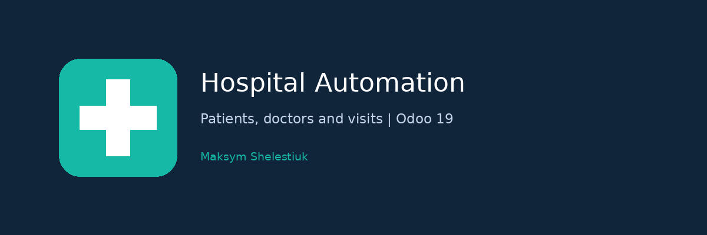

Manage patient records, doctor qualifications, intern supervision, visits, disease classifications and clinical reports with a five-role access hierarchy.
Copy this addon into your Odoo 19 addons path, update the Apps list and install it. See README.rst for operation and validation.
LGPL-3. Maintained by Maksym Shelestiuk. Maintainer profile.